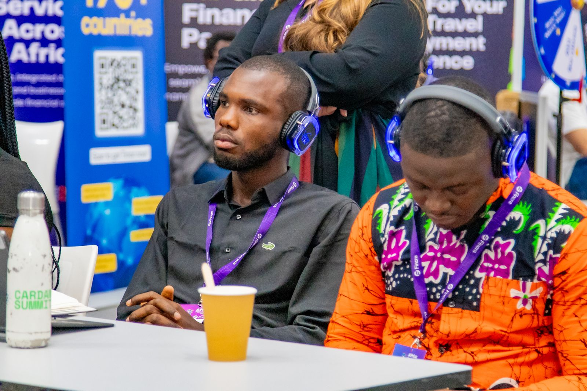

Ecosystem work
Ideas get stronger in conversation.
Technology leadership includes learning from people, teams and real operating environments—then translating those lessons into practical systems.
About John Okojere
John Nnaemeka Okojere is Chief Technology Officer and Technical Lead at Digi02 Tech Systems and Head of Software Solutions at NetHawk Solutions. He holds a Bachelor of Engineering in Information and Communication Engineering from the Air Force Institute of Technology, Kaduna.
01 — Biography
John Nnaemeka Okojere is a software engineer and technology leader based in Kaduna, Nigeria. He is Chief Technology Officer and Technical Lead at Digi02 Tech Systems, where he leads a team of more than 30 people across design, software development, data science and cybersecurity, and Head of Software Solutions at NetHawk Solutions. He is the developer of SkyGrid, Digi02’s enterprise UAV operations platform.
Okojere studied Information and Communication Engineering at the Air Force Institute of Technology, Kaduna, graduating with a Bachelor of Engineering in 2024. For his final-year project he designed and built a decentralised payment gateway using React, Solidity and MetaMask.
He began coding in 2018 and started his professional career in 2020 as a Python web developer, working on the competition platform for Project Star Africa and on the ride-sharing platform at Mobiride in Lagos. He went on to build web platforms for the media organisation Layers of Truth and the tutoring platform Edukom. In 2024 he joined Digi02 Tech Systems as Team Lead, Software Projects, where his team delivered three SaaS products, an internal tool and an e-commerce platform, and was later promoted to Chief Technology Officer. The same year he joined NetHawk Solutions, founded by his mentor Adedoyin Akerele, rising from Innovation & Technology Strategist to Head of Software Solutions.
In February 2026 he was among the top five in Africa at the Cardano Africa Tech Summit in Nairobi.
His research interests include artificial intelligence, secure communications, autonomous systems, aerospace and satellite communications, and Web3.
02 — Career
03 — Education
04 — Recognition & certifications

Ecosystem work
Technology leadership includes learning from people, teams and real operating environments—then translating those lessons into practical systems.
05 — For press & editors
John Nnaemeka Okojere is a Kaduna-based software engineer and technology leader. He is Chief Technology Officer & Technical Lead at Digi02 Tech Systems, where he leads a 30+ person team across design, development, data science and cybersecurity, and Head of Software Solutions at NetHawk Solutions. He develops SkyGrid, an enterprise UAV operations platform. A graduate of the Air Force Institute of Technology, he was among the top five in Africa at the Cardano Africa Tech Summit 2026 in Nairobi.
For interviews, speaking or media enquiries: nnaokojere@gmail.com